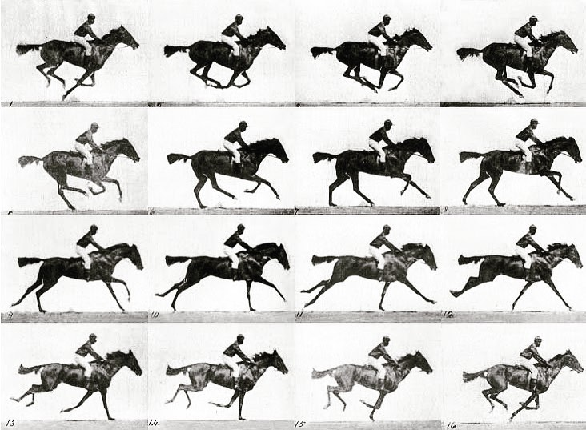
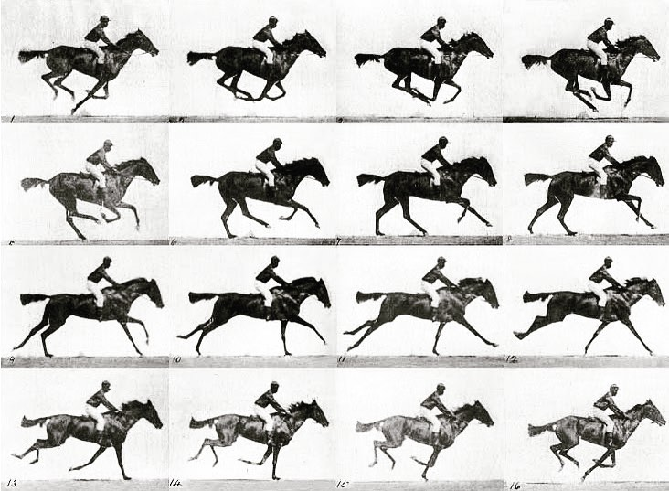

Roundhay Garden Scene (1888)
The Roundhay Garden Scene is the oldest surviving film in existence. It is only 2 seconds long but it is technically a movie.
The Roundhay Garden Scene is the oldest surviving film in existence. It is only 2 seconds long but it is technically a movie.
